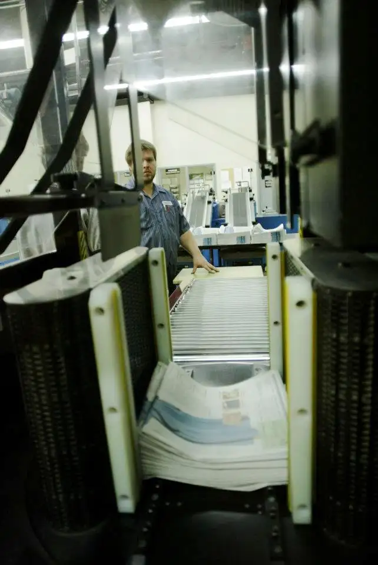
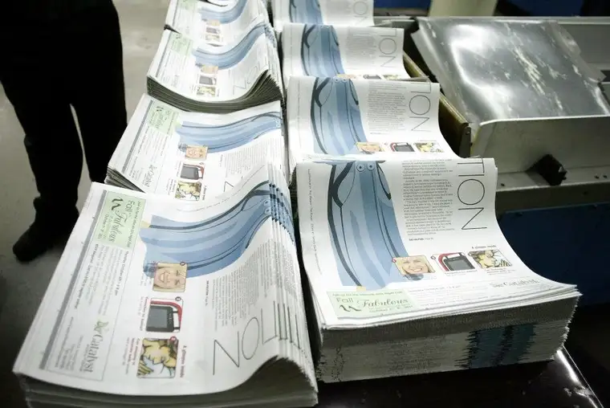
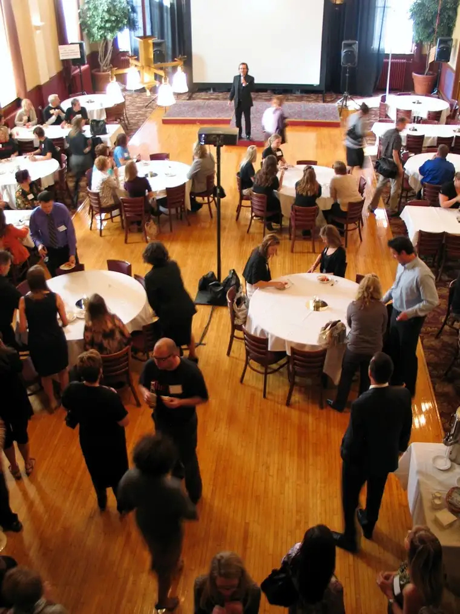
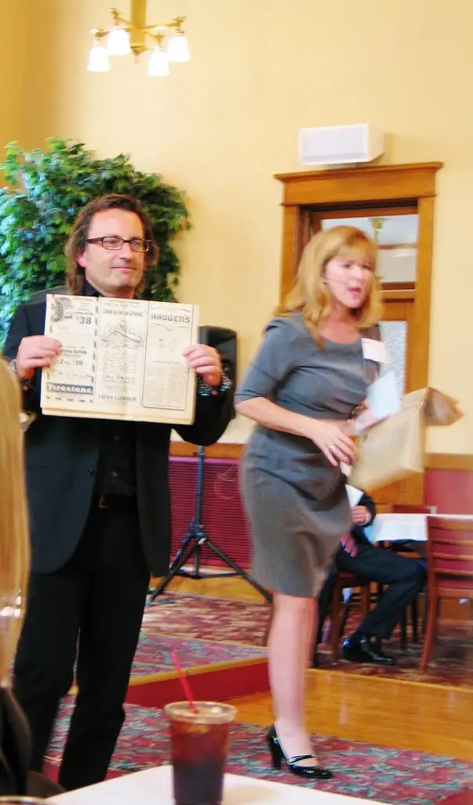
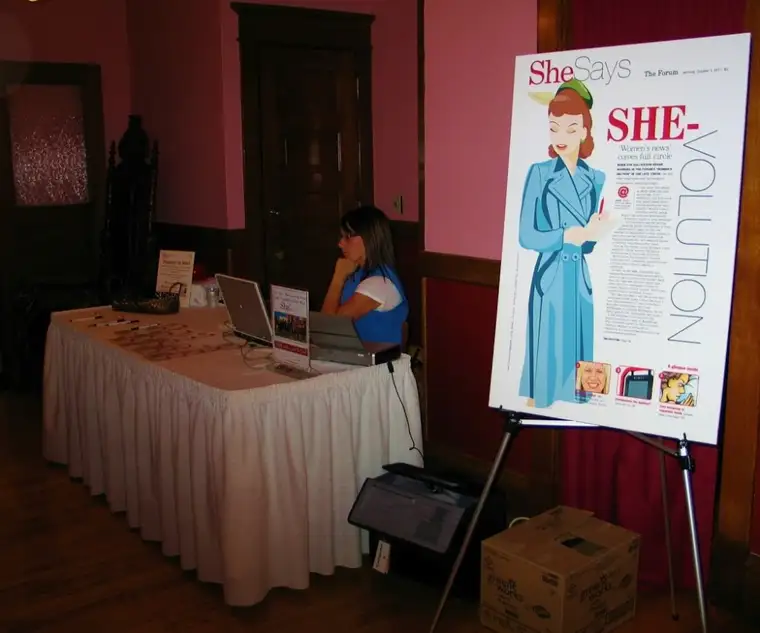
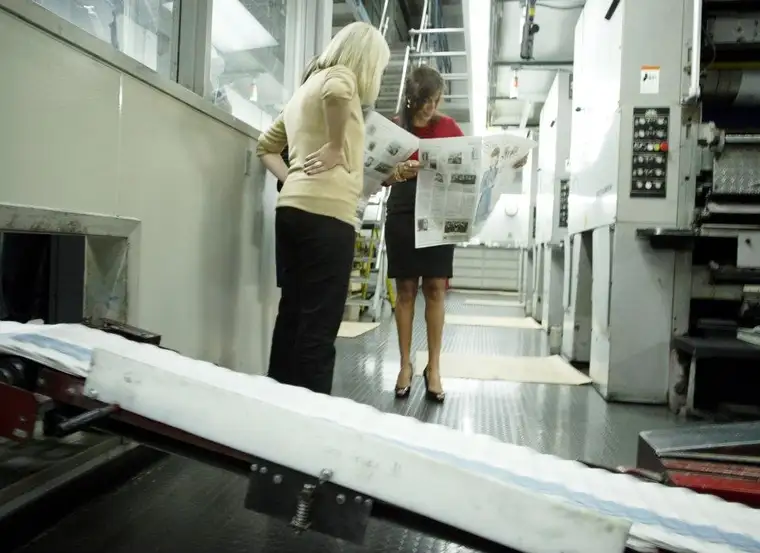

This week, a months-long dream became reality when North Dakota’s largest daily newspaper rolled out its very first edition of SheSays, a daily offering that will be produced by and for women.
 |
| The presses are rolling!!! SheSays becomes a reality… (photo credit: Heidi Shaffer) |
{kind=link}
 |
| The first run of SheSays folded and ready to go! (photo credit: Heidi Shaffer) |
{kind=link}
When the idea for SheSays was first presented to me this past summer, Mary Jo Hotzler, deputy editor of The Forum, admitted there were some naysayers. After all, women’s sections in newspapers had made their mark years ago, then disappeared as the feminist movement became prominent. It had been deemed that sections dedicated to the female sector were archaic, no longer useful.
Problem was, nothing concrete really replaced them. Rather than having a strong voice within newspapers, women largely slipped away and papers went back to being mainly the domain of men. But a new dilemma has arisen in recent years, something this struggling medium has been forced to consider. Women make the majority of buying decisions within households; likewise, they are the most invested in keeping an eye on advertisements showing products they’re considering. (Gulp!)
The Forum recognized this deficiency and decided to do something about it. So over the summer, a group of contributors — designers, writers and editors — was assembled to produce what may be the first women’s section in the country with this volume of output. Not just once a week, but daily, we women will be singled out in a good way. Our local newspaper wants to make itself a place where we can mingle with the rest of the female population, ponder matters important to us, and even allow our male counterparts a closer glimpse into the feminine mystique.
Last week, the players of SheSays got together with business people in our community to share this vision, be introduced, and mingle over appetizers and drinks at The Avalon in Downtown Fargo.
 |
| Business folks meet with SheSays crew over appetizers at The Avalon, Downtown Fargo |
{kind=link}
A “story behind the story” video was shown, and our young publisher (below) dug out some old papers with women’s sections from long ago. I enjoyed being part of the festivities launching the section. The resulting energy has been palpable!
 |
||
| Publisher Bill Marcil Jr., with Tracy Briggs, explains SheSays vision |
{kind=link}
Yesterday, my parenting column was the first of our “Parenting Perspectives” offering to be published in the new section. (You can go here to read the blog version; I’m counting on it eliciting a few giggles!) And my first article, coming in a couple weeks, will be about women and faith. I’m in the middle of compiling the interviews for that now and am looking forward to sharing what I’ve collected and learned.
One of the things I love best about writing locally is that I frequently bump into readers around town — in the grocery store, at my kids’ sporting events and at other community gathering spots. I love hearing real-life feedback from people I know, and meeting new people who recognize me through my column and appreciate what I share with them. Honestly, I can think of few better rewards than to hear, while pushing my cart between the banana and onion aisles, “Hey, I really loved your last column. That’s exactly the way I feel!” Makes the hard work and mental energy it takes to be a writer worth it.
And honestly, for me personally, this is something of a “she-volution,” as that first edition called it:
 |
| SheSays launch party included “story behind the story” video, schmoozing |
{kind=link}
When I left my newspaper career to be a more focused mother, it wasn’t without some measure of regret. I knew I’d miss the newsroom and I didn’t want to abandon all that I’d learned during my hard-working years in that environment. Finding my way into column writing was one step in the process of coming “home” to the newsroom without actually being there on a daily basis. And now, with the advent of SheSays, I’ll play an even larger part in what began to unfold when our parenting columns debuted nearly four years ago. I’m genuinely excited for what’s happening, and what’s yet to come.
 |
| Editor Mary Jo Hotzler and contributing columnist Chris Linnares look over the first edition of SheSays section (photo credit: Heidi Shaffer) |
{kind=link}
Q4U: What sorts of articles would you look for in a women’s section of your newspaper?